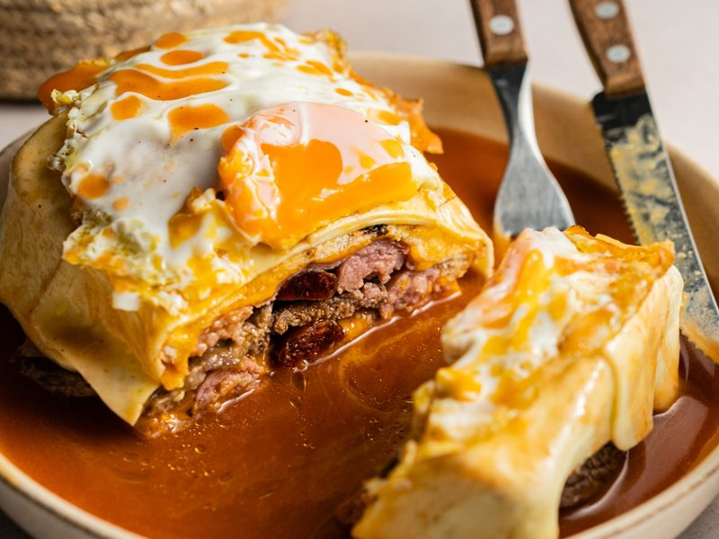
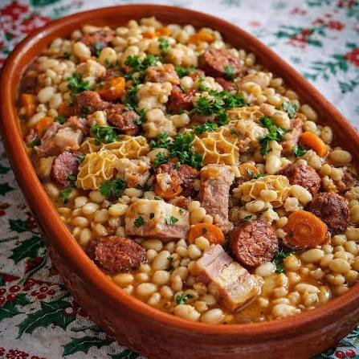

Francesinha

A francesinha é uma das especialidades gastronómicas mais conhecidas do Porto.
Tripas à moda do Porto

Este prato tradicional está associado à história e à identidade da cidade.
Especialidades gastronómicas
| Prato | Tipo |
|---|---|
| Francesinha | Prato principal |
| Tripas à moda do Porto | Prato principal |
| Bacalhau à Gomes de Sá | Prato principal |